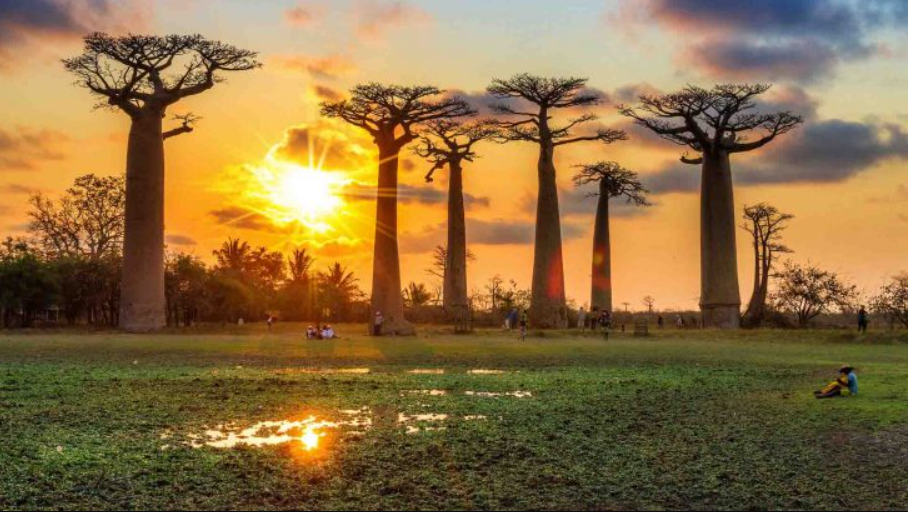
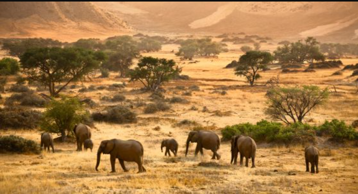
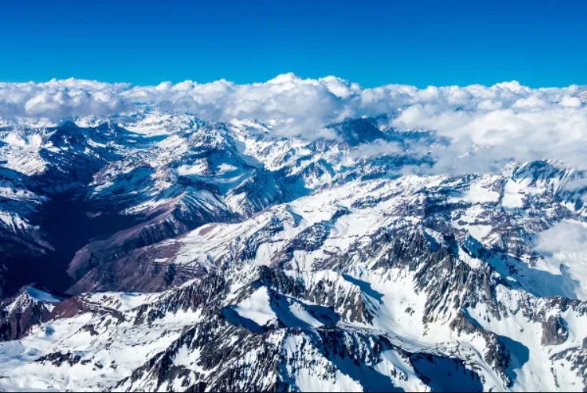
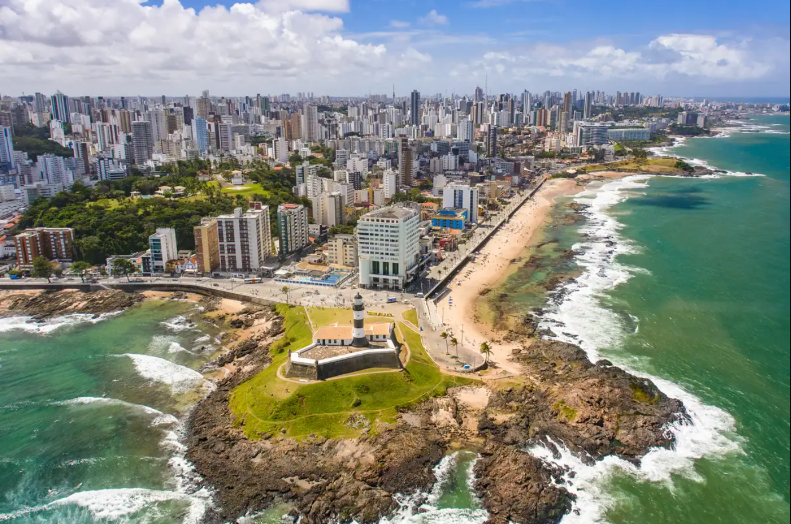

A África é um dos maiores e mais diversos continentes do mundo. A economia dos seus países é baseada essencialmente na extração mineral e vegetal. Sendo um continente localizado na zona intertropical, com maior parte do seu território no Hemisfério Sul, possui mais de um bilhão de habitantes e 30 milhões de km2 de extensão, sendo, por isso, considerado um dos maiores e mais populosos continentes do mundo.
 A América do Sul é um dos subcontinentes da América. Apresenta paisagens naturais muito diversas e uma enorme biodiversidade, abrigando a maior floresta tropical do mundo. Apresenta área de 17 milhões de km², com a maior extensão situada no hemisfério sul do planeta Terra. A população sul-americana é de mais de 434 milhões de habitantes, numa região com aspectos climáticos e geomorfológicos bastante diversos e únicos, que abriga feições como a Cordilheira dos Andes e a Planície Amazônica, além de uma enorme biodiversidade.
 